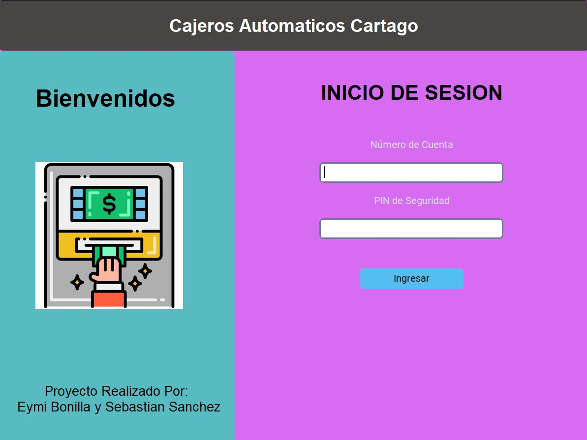
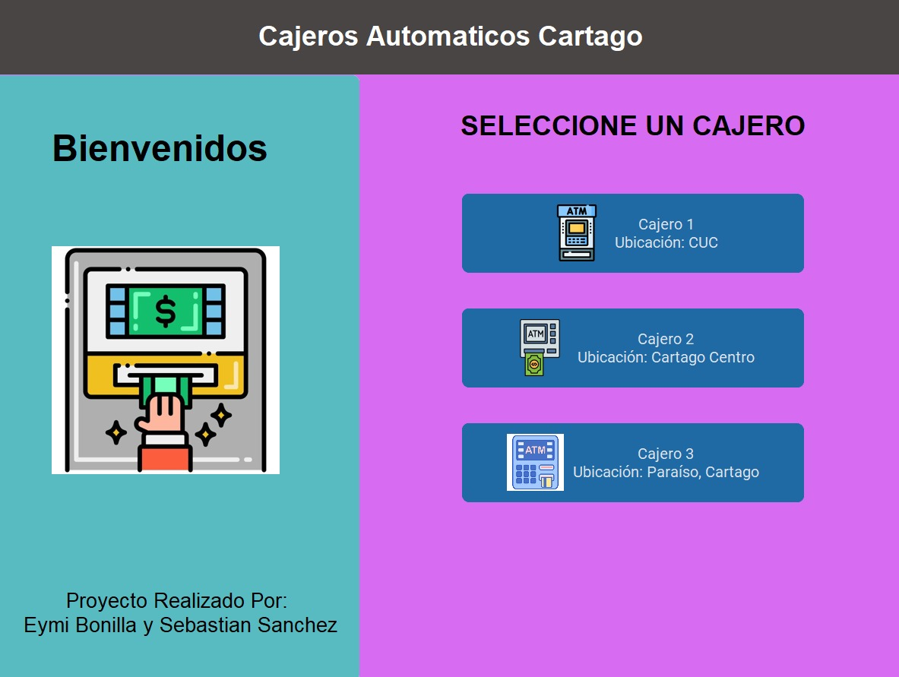
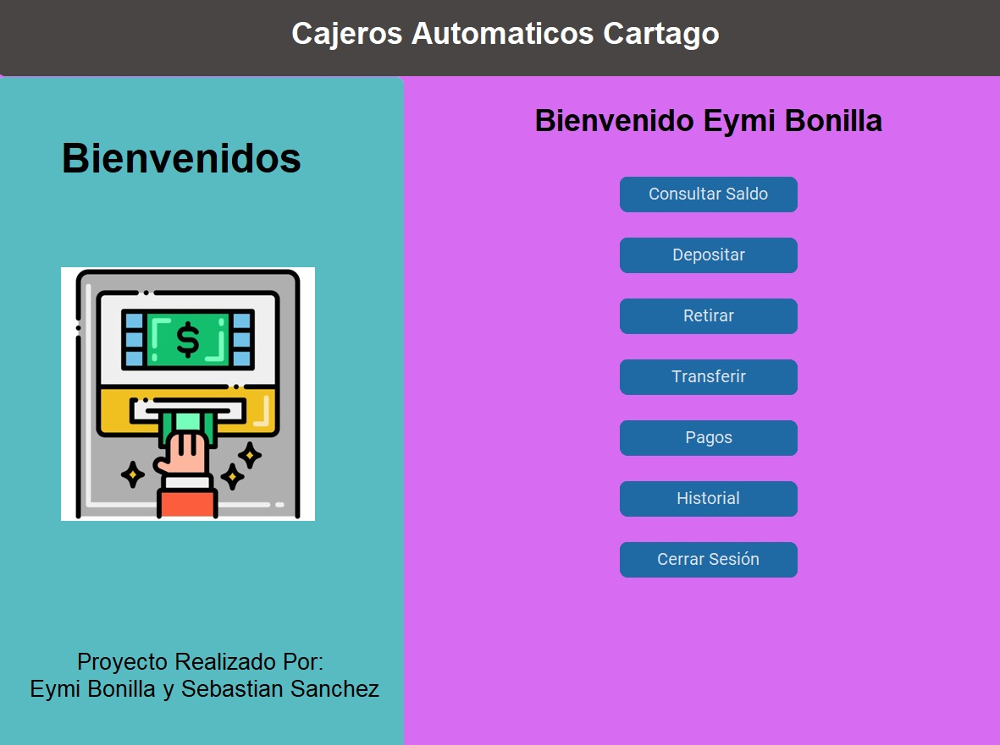
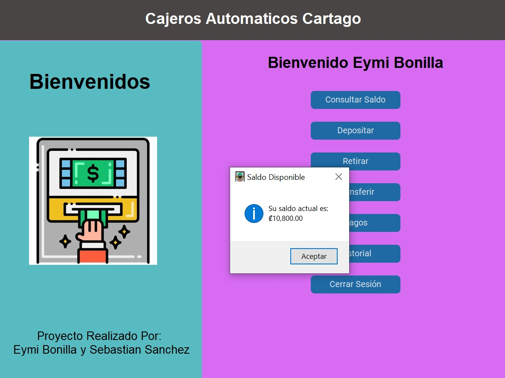
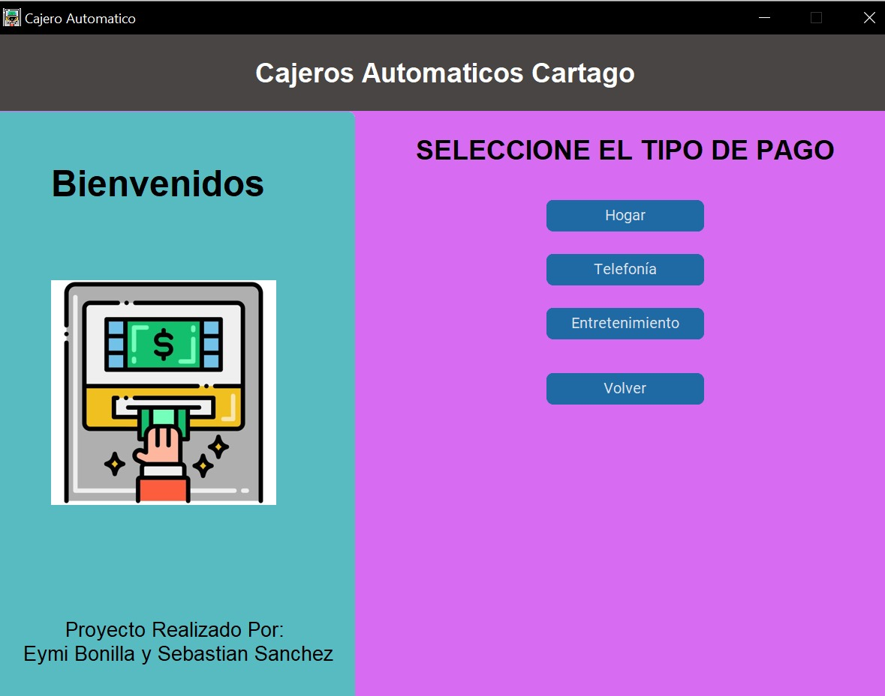
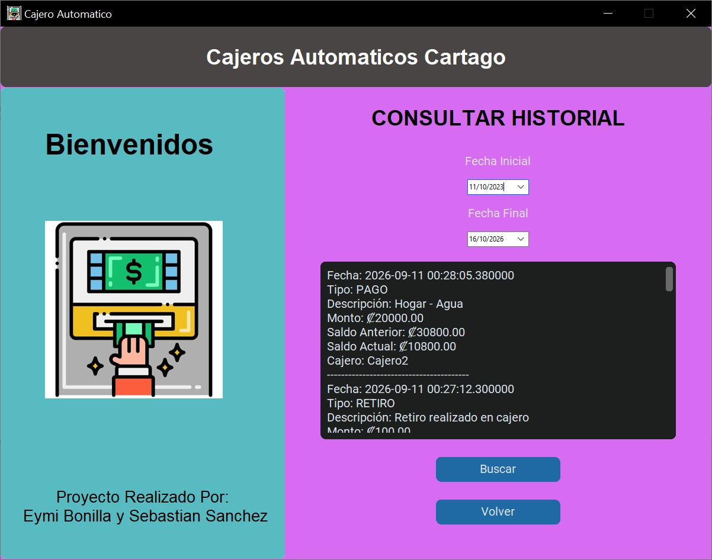

Proyecto académico de programación 3
El proyecto consiste en el desarrollo de un sistema de cajeros automáticos para simular operaciones bancarias básicas como retiros, depósitos y consultas de saldo.
En esta parte del proyecto se muestra la primera parte del proyecto donde se debia ingresar por medio de un usuario para mayor seguridad simulando un el inicio de sesion de un cajro automatico

En esta sección se muestra los cajeros que están a disposición del usuario, además de su ubicación

En esta sección se muestra las operaciones que se pueden realizar en los cajeros automáticos

En esta sección se muestra el saldo que tiene el usuario en su cuenta

En esta sección se muestra los diferentes tipos de pagos que puede realizar el usuario

En esta sección se muestra el historial de transacciones del usuario

Se obtuvo el rol de programadora junto a mi compañero, donde se tuvo que trabajar en equipo para lograr el objetivo del proyecto, el manejo de error y la comunicación efectiva.